Name : Azel
Introduction :
The essential story being told by my portfolio site is the evolution of my professional journey as a visionary front-end engineer in the year 2034. This portfolio showcases a future version of myself who has significantly contributed to the field of web development through cutting-edge technologies like AI-driven interfaces, quantum computing, and Web 5.0. The audience I'm addressing includes potential employers, clients, and industry peers who are interested in my skills, accomplishments, and innovative approach to front-end development. I chose a clean, modern, and responsive structure that allows for seamless navigation and interaction, ensuring that the portfolio is easy to explore on any device.
Inspirations :
1. Brittany Chiang (https://brittanychiang.com/)
2. Annie (https://anniebombanie.com/)
3. Matt Farley (https://mattfarley.ca/)
These three portfolios have inspired different aspects of my own design process, teaching me the importance of consistency, creativity, storytelling, usability, minimalism, and attention to detail. Each one has shown me how to effectively communicate my personal brand while providing a seamless and engaging user experience.
Accessibility:
1. Responsive design: My site is fully responsive, meaning it adapts to different screen sizes and devices, making it accessible to users on desktops, tablets, and smartphones.
2. Keyboard Navigation: All interactive elements on the site can be accessed and navigated using the keyboard, ensuring that users who rely on keyboard navigation can fully engage with the content.
3. Alt Text for Images: I've included descriptive alt text for all images to ensure that screen readers can convey the content to visually impaired users, improving the overall accessibility of the site.
Usability :
1. Clear Navigation: The site features a straightforward navigation menu that allows users to easily find the information they are looking for without confusion.
2. Fast Load Times: I optimized images and minimized code to ensure that the site loads quickly, enhancing the user experience, especially for those with slower internet connections.
3. Consistent Layout: Each section of the site follows a consistent layout, making it easier for users to understand and predict where they can find certain types of information.
Learning :
1. GSAP: I had to learn how to integrate and use GSAP to create advanced animations that enhance user interaction. I achieved this through online tutorials and documentation provided by the GSAP communities.
2. Responsive Design Principles: I deepened my understanding of responsive web design by studying media queries, flexible grids, and fluid layouts, which I implemented through trial and error in my CSS.
3. Accessibility Best Practices: To ensure my site is accessible, I researched and applied best practices such as ARIA labels, semantic HTML, and keyboard-friendly navigation.
Evaluation I :
One of the most successful aspects of my work is the dynamic and interactive user interface. The animations created using GSAP provide a modern, engaging experience that keeps users interested in exploring the site. The responsive design ensures that the portfolio looks great on all devices, making it versatile and user-friendly. Additionally, the clear and intuitive navigation structure helps users find the information they need quickly, enhancing the overall user experience.
Evaluation II:
I could improve the site's accessibility by implementing a dark mode option for users with visual sensitivities.
Resources :
GSAP Documentations, Visual Studio Code, Unsplash, MDN Web Docs, W3Schools, Figma
Appendices :
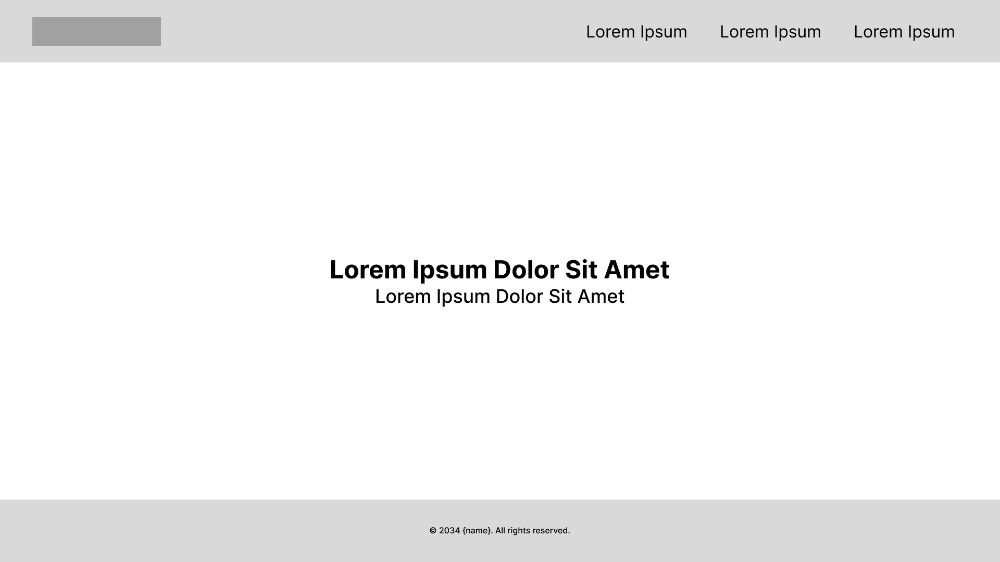 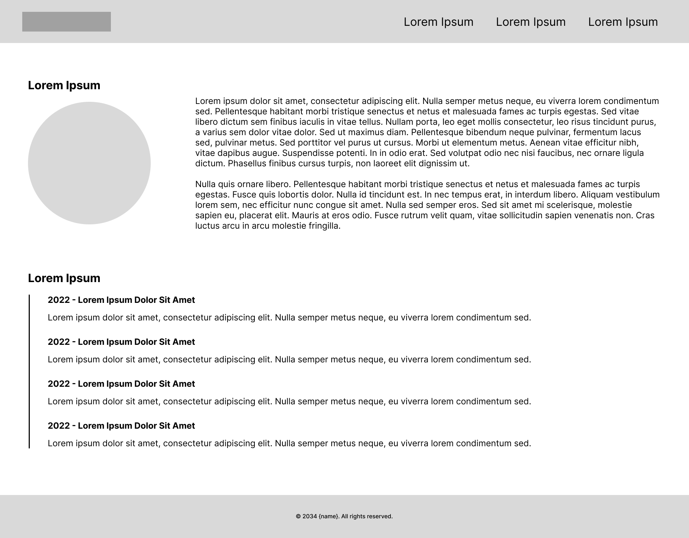 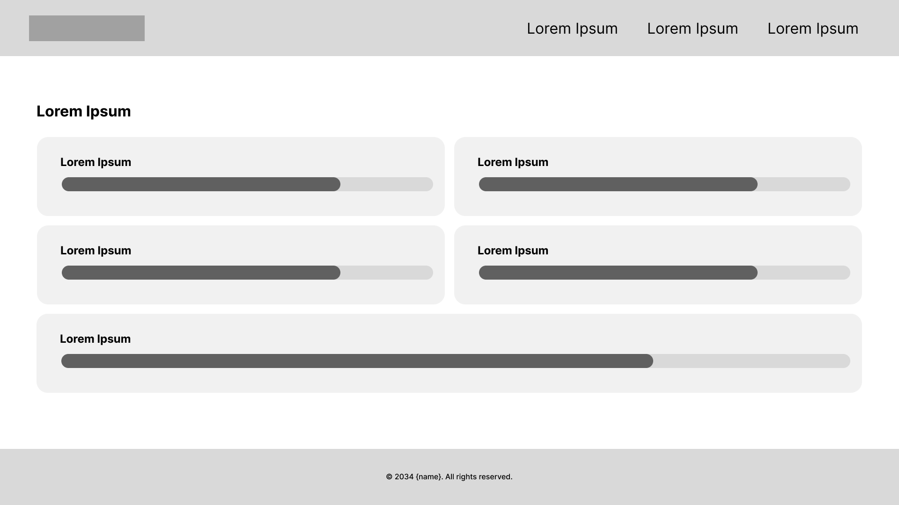 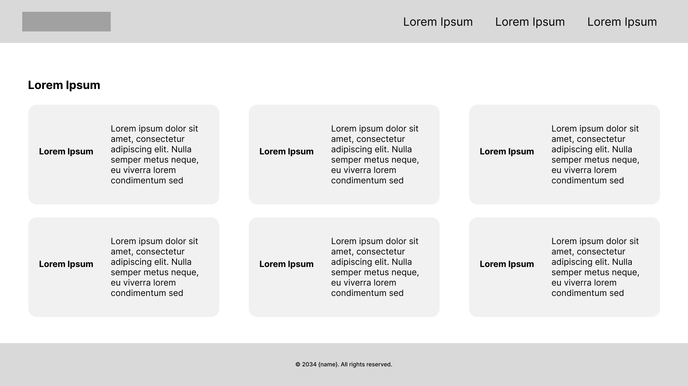 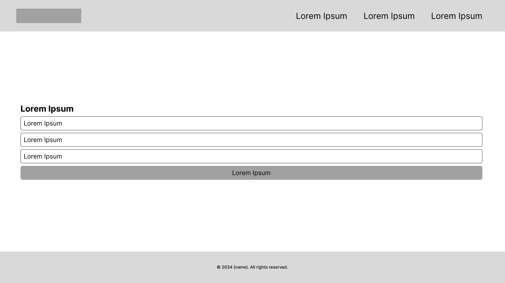 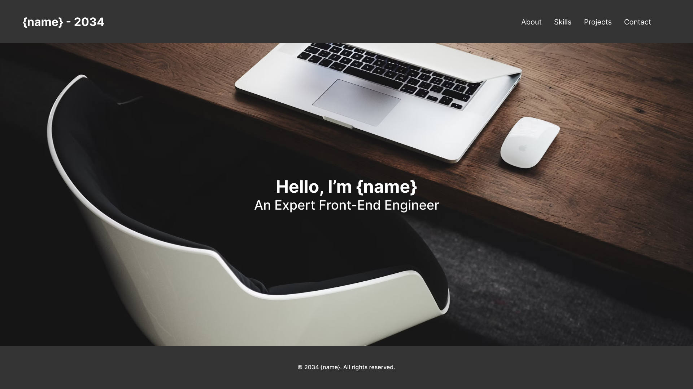 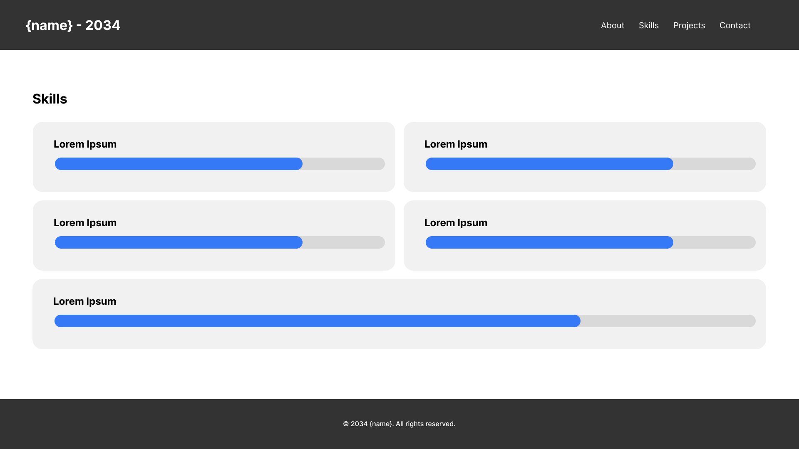
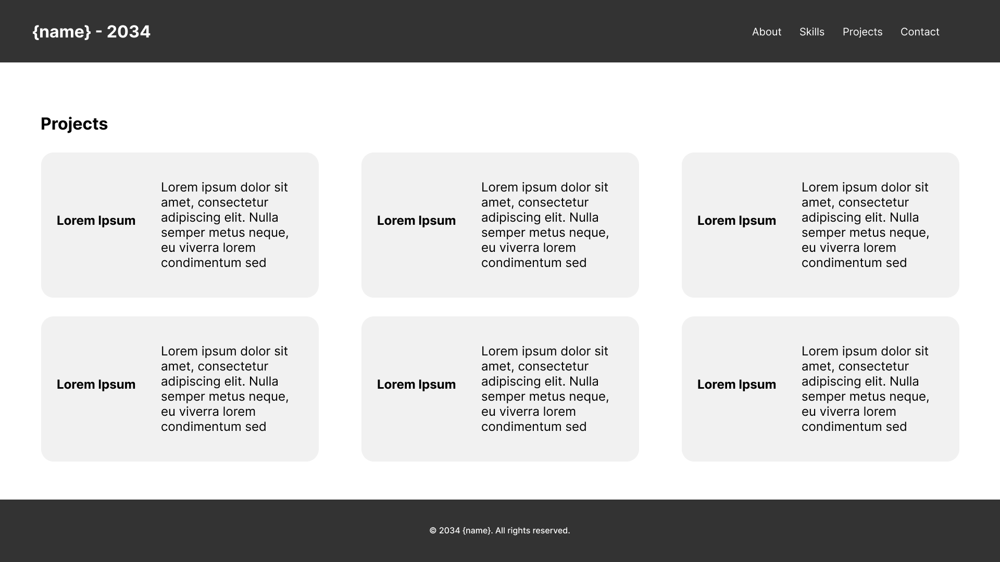
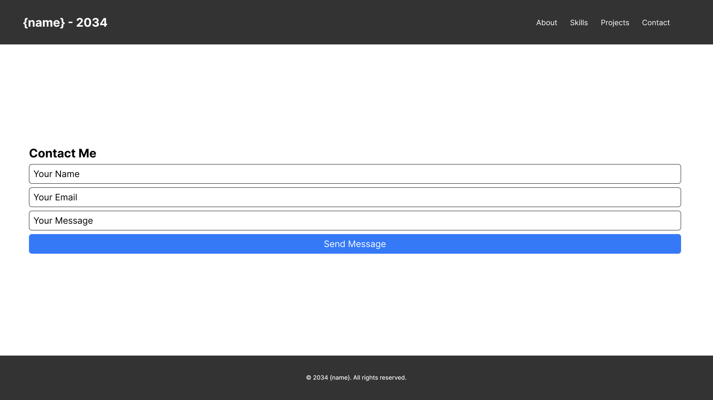
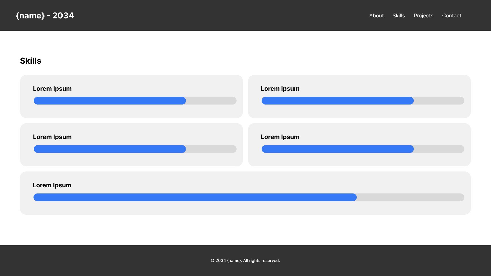
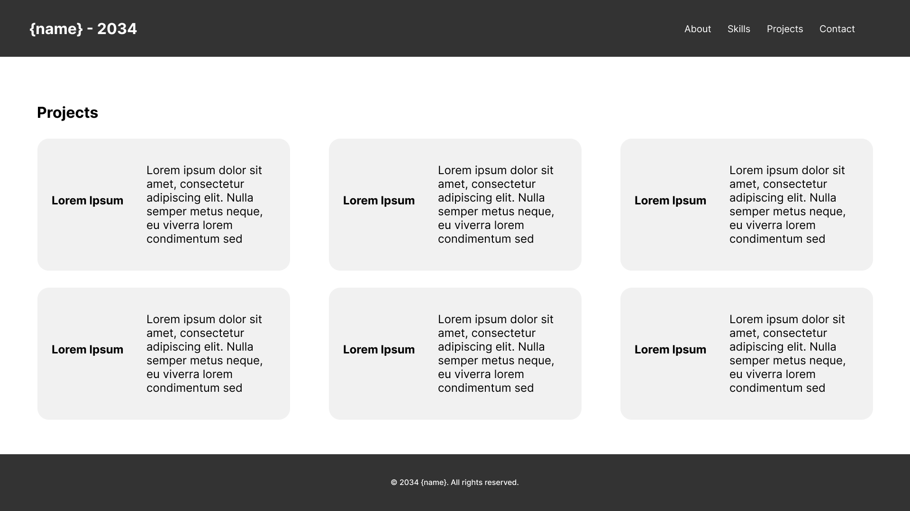
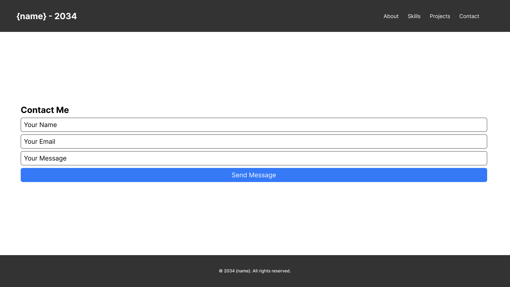